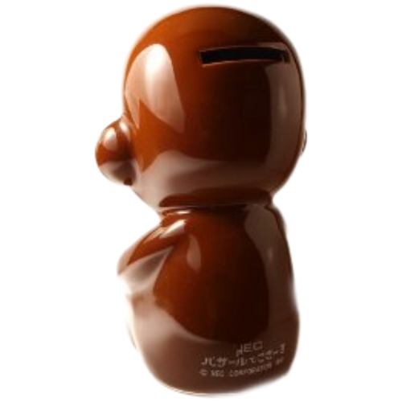
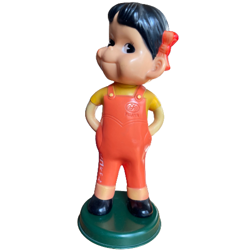
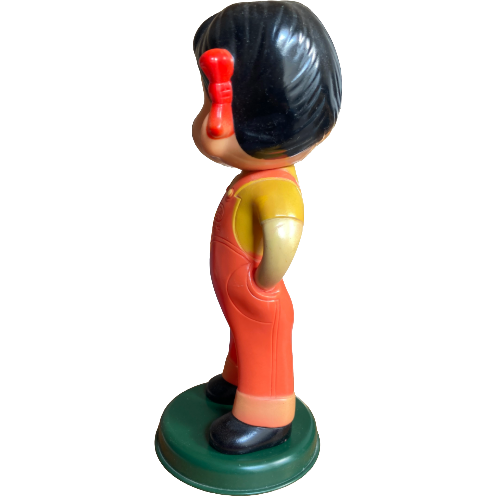
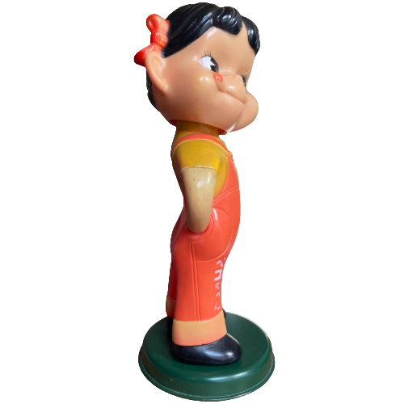
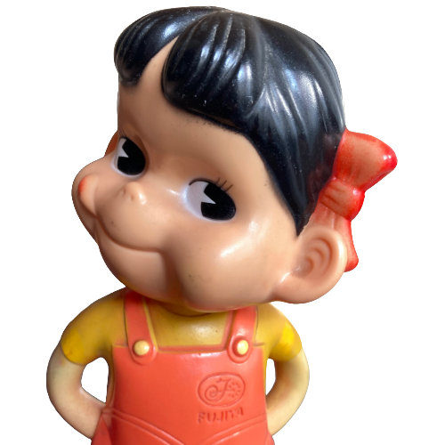
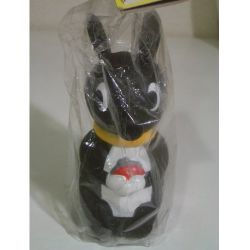
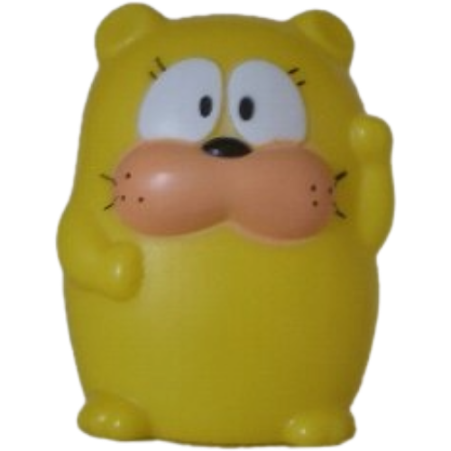

昭和レトログッズ その8
Old but Gold. 昔なつかしいもの集めました。納めきれなかったものたち
English version is under construction. Please stay tuned!
バザールでござーる
貯金箱
NEC バザール・デ・ゴザール貯金箱 陶器製
アフリカの旧ザイール（コンゴ共和国）から日本に留学中です。最近CMを見かけないのが残念です。
バザござグッズはたくさんあります。集めるのが楽しそうなマスコットです。少しずつ集められたら、と思います。
出版されているバザールでござーるの絵本は『バザールでござーるのバナナ裁判』『バザールでござーるの小冒険』
CMとは別のバザール・デ・ゴザールの一面が見られます。私は『バザールでござーるのバナナ裁判』を読みました。水野克夫さんのイラストがきれいな絵本でした。
バザール・デ・ゴザールが泥棒の容疑で警察に捕まってしまいます。どうなるのか、どきどきしました。
『バザールでござーるの小冒険』は昔本屋で立ち読みしただけなので、そのうちもう一度読みたいなと思っています。
アフリカの旧ザイール（コンゴ共和国）から日本に留学中です。最近CMを見かけないのが残念です。
バザござグッズはたくさんあります。集めるのが楽しそうなマスコットです。少しずつ集められたら、と思います。
出版されているバザールでござーるの絵本は『バザールでござーるのバナナ裁判』『バザールでござーるの小冒険』
CMとは別のバザール・デ・ゴザールの一面が見られます。私は『バザールでござーるのバナナ裁判』を読みました。水野克夫さんのイラストがきれいな絵本でした。
バザール・デ・ゴザールが泥棒の容疑で警察に捕まってしまいます。どうなるのか、どきどきしました。
『バザールでござーるの小冒険』は昔本屋で立ち読みしただけなので、そのうちもう一度読みたいなと思っています。
入手：2008年
ペコちゃん
フィギュア



不二家ペコちゃん
店頭に置かれていたものと思われます。いつ譲っていただいたのか覚えていないので、とりあえず掲載。約30cm
店頭に置かれていたものと思われます。いつ譲っていただいたのか覚えていないので、とりあえず掲載。約30cm
入手：200?年
くまのバンクー
貯金箱
住友銀行のくまのバンクー貯金箱。約10㎝
バザールでござーるなどのCMを手がけた佐藤雅彦さんと内野真澄さんのイラストで、かわいい雰囲気のコマーシャルを当時していました。結構すきなCMでした。
赤いがま口を持っています。とっても足長なんです。この写真からは全くわかりませんが（笑）約10㎝
バザールでござーるなどのCMを手がけた佐藤雅彦さんと内野真澄さんのイラストで、かわいい雰囲気のコマーシャルを当時していました。結構すきなCMでした。
赤いがま口を持っています。とっても足長なんです。この写真からは全くわかりませんが（笑）約10㎝
入手：2008年
オヨネコぶーにゃん
貯金箱
安田信託銀行 オヨネコぶーにゃん貯金箱
昔、楽しみにアニメを見ていました。懐かしいキャラクターです。原作は『しあわせさん』と言う漫画です。
昔、楽しみにアニメを見ていました。懐かしいキャラクターです。原作は『しあわせさん』と言う漫画です。
入手：2007年